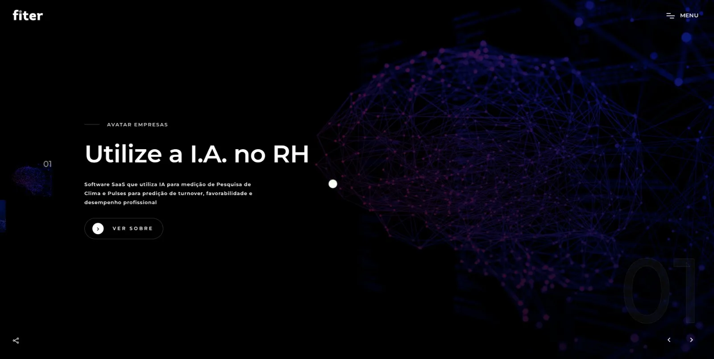
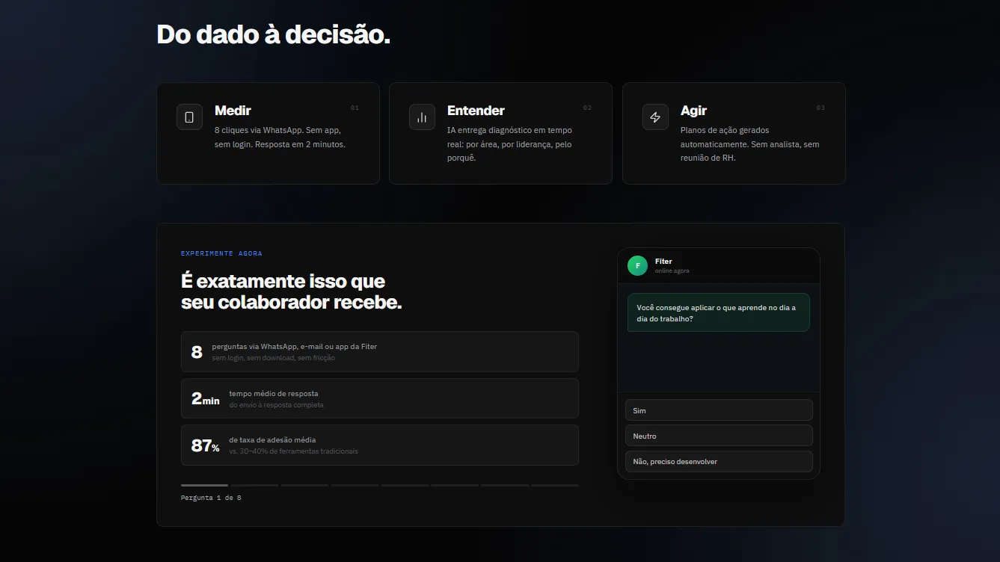
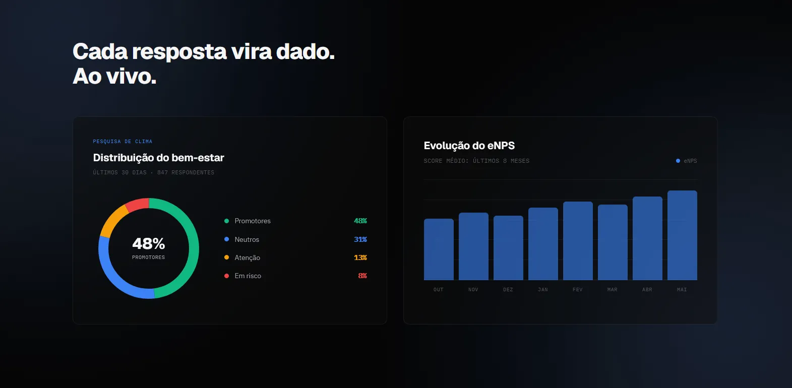

The data was real.
The website wasn't telling anyone.
Fiter had built a platform HR directors were actually using. Their AI was delivering decisions no survey tool could match. The website wasn't keeping up with any of it.

Why enterprise buyers say yes.
The site's job wasn't to invent proof, it was to get Fiter's own product numbers in front of a skeptical buyer before they lost interest. These are the three a corporate buyer checks before signing, and the reason the deal happens.
Measured across 500k+ people, an 8-click survey that takes 2 minutes, the process behind the numbers above.
* Product metrics sourced from Fiter's client base. Website GA data pending 90-day post-launch cycle.
Where Fiter's enterprise buyers
were dropping off.
Fiter is a deeptech employee experience platform rooted in academic research from USP. Its AI captures what traditional surveys miss and delivers decisions in under 2 minutes via WhatsApp. The product is genuinely sophisticated. The website wasn't reflecting that to enterprise buyers.
"Sua instituição parece bem. Os dados contam outra história."
Fiter · Hero headline, rebuilt homepage
Same data. A pitch buyers believe.

Before AfterFig. 02: Drag to compare · Old fiter.com.br vs. Vellumwire rebuild
Built to earn an enterprise "yes."
Before any pixel moved, four strategy documents were produced: buyer journey maps, keyword cluster research, an IA redesign, and an SEO roadmap. The rebuild started with one question: what does a skeptical enterprise buyer need to believe before they book a demo?
HR and Education buyers each get their own landing page.
The HR Performance Manager and the Education Administrator have fundamentally different KPIs, different budgets, and different objections. Sending them to the same page wastes the specificity that closes deals. Each track now has its own narrative, its own metrics, its own CTA.
500k+ people. 8 clicks. 2 minutes. First thing the buyer sees.
In a market where platforms promise engagement and rarely prove it, these numbers are the argument. They appear in the hero, not buried two scrolls deep where most visitors never arrive.
"É deeptech com DNA na USP." The differentiator most competitors can't claim.
Fiter's methodology is peer-reviewed and cited. That's a claim no survey-tool startup can make. The rebuilt site puts this at the top of the credibility hierarchy, not in an about-page footer.
Volume first. Names second. Per-client numbers third.
500k+ establishes scale. Kroton, ARCOR, Marinha do Brasil establish category. The per-client metrics (87% adoption, 89 eNPS) establish consistency. They appear in this order, right before the demo CTA: that sequencing is what converts a skeptic into a booking.
"Agende uma demonstração." Calendly, direct, no form, no waiting.
The demo is the product. No generic contact forms, no email-and-wait. Direct booking with a specialist who knows the objections. They can make the proposal the same day, if it makes sense.
What shipped.


In deeptech B2B, the complexity of the product is the credibility of the website. But only when the website translates it for the buyer.
Enterprise buyers don't disqualify complexity. They disqualify websites that can't explain it. When the product can prove 87% adoption and USP research backing, the site's job is to show that clearly, not bury it in jargon or spread it across pages buyers never reach.
Same problem?
Let's talk.
30-minute teardown. We go through your site and point out exactly where visitors are dropping off. If there's nothing to fix, we'll say that too.
Selo H
Brazil's first international-standard workplace mental health certification. The product had credibility. The website was letting it down. We rebuilt it from the ground up.